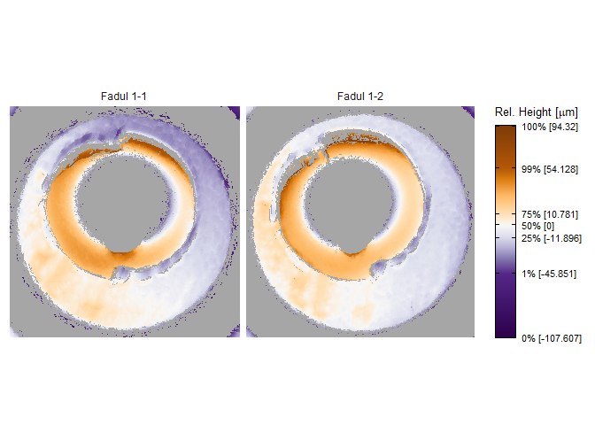
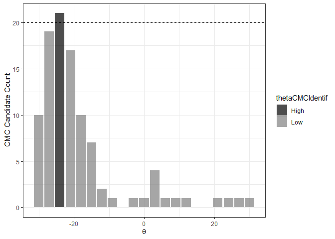

The cmcR package provides an open-source implementation of the Congruent Matching Cells method for cartridge case identification as proposed by Song (2013) as well as the “High CMC” method proposed by Tong et al. (2015).
Installation
Install the development version from GitHub with:
# install.packages("devtools")
devtools::install_github("jzemmels/cmcR")Cartridge case scan data can be accessed at the NIST Ballisitics Toolmark Research Database
Example
We will illustrate the package’s functionality here. Please refer to the package vignettes available under the “Articles” tab of the package website for more information.
library(cmcR)
library(magrittr)
library(dplyr)
#>
#> Attaching package: 'dplyr'
#> The following objects are masked from 'package:stats':
#>
#> filter, lag
#> The following objects are masked from 'package:base':
#>
#> intersect, setdiff, setequal, union
library(ggplot2)
library(x3ptools)Consider the known match cartridge case pair Fadul 1-1 and Fadul 1-2. The read_x3p function from the x3ptools package can read scans from the NBTRD given the appropriate address. The two scans are read below and visualized using the x3pListPlot function.
fadul1.1_id <- "DownloadMeasurement/2d9cc51f-6f66-40a0-973a-a9292dbee36d"
# Same source comparison
fadul1.2_id <- "DownloadMeasurement/cb296c98-39f5-46eb-abff-320a2f5568e8"
# Code to download breech face impressions:
nbtrd_url <- "https://tsapps.nist.gov/NRBTD/Studies/CartridgeMeasurement/"
fadul1.1_raw <- x3p_read(paste0(nbtrd_url,fadul1.1_id))
fadul1.2_raw <- x3p_read(paste0(nbtrd_url,fadul1.2_id))
x3pListPlot(list("Fadul 1-1" = fadul1.1_raw,
"Fadul 1-2" = fadul1.2_raw),
type = "faceted")
Preprocessing
To perform a proper comparison of these two cartridge cases, we need to remove regions that do not come into uniform or consistent contact with the breech face of the firearm. These include the small clusters of pixels in the corners of the two scans from the microscope staging area, and the plateaued region of points around the firing pin impression hole near the center of the scan. A variety of processing procedures are implemented in the cmcR package. Functions of the form preProcess_* perform the preprocessing procedures. See the funtion reference of the cmcR package for more information regarding these procedures. As is commonly done when comparing cartridge cases, we downsample each scan (by a factor of 4, selecting every other row/column) using the sample_x3p function.
fadul1.1_processed <- fadul1.1_raw %>%
preProcess_crop(region = "exterior",
radiusOffset = -30) %>%
preProcess_crop(region = "interior",
radiusOffset = 200) %>%
preProcess_removeTrend(statistic = "quantile",
tau = .5,
method = "fn") %>%
preProcess_gaussFilter() %>%
x3ptools::sample_x3p()
fadul1.2_processed <- fadul1.2_raw %>%
preProcess_crop(region = "exterior",
radiusOffset = -30) %>%
preProcess_crop(region = "interior",
radiusOffset = 200) %>%
preProcess_removeTrend(statistic = "quantile",
tau = .5,
method = "fn") %>%
preProcess_gaussFilter() %>%
x3ptools::sample_x3p()
x3pListPlot(list("Processed Fadul 1-1" = fadul1.1_processed,
"Processed Fadul1-2" = fadul1.2_processed),
type = "faceted")
Cell-based comparison procedure
Functions of the form comparison_* perform the steps of the cell-based comparison procedure. The data generated from the cell-based comparison procedure are kept in a tibble where one row represents a single cell/region pairing.
The comparison_cellDivision function divides a scan up into a grid of cells. The cellIndex column represents the row,col location in the original scan each cell inhabits. Each cell is stored as an .x3p object in the cellHeightValues column. The benefit of using a tibble structure is that processes such as removing rows can be accomplished using simple dplyr commands such as filter.
cellTibble <- fadul1.1_processed %>%
comparison_cellDivision(numCells = 64)
cellTibble
#> # A tibble: 64 x 2
#> cellIndex cellHeightValues
#> <chr> <named list>
#> 1 8, 1 <x3p>
#> 2 8, 2 <x3p>
#> 3 8, 3 <x3p>
#> 4 8, 4 <x3p>
#> 5 8, 5 <x3p>
#> 6 8, 6 <x3p>
#> 7 8, 7 <x3p>
#> 8 8, 8 <x3p>
#> 9 7, 1 <x3p>
#> 10 7, 2 <x3p>
#> # ... with 54 more rowsThe comparison_getTargetRegions function extracts a region from a target scan (in this case Fadul 1-2) to be paired with each cell in the reference scan.
cellTibble <- cellTibble %>%
mutate(regionHeightValues = comparison_getTargetRegions(cellHeightValues = cellHeightValues,
target = fadul1.2_processed))
cellTibble
#> # A tibble: 64 x 3
#> cellIndex cellHeightValues regionHeightValues
#> <chr> <named list> <named list>
#> 1 8, 1 <x3p> <x3p>
#> 2 8, 2 <x3p> <x3p>
#> 3 8, 3 <x3p> <x3p>
#> 4 8, 4 <x3p> <x3p>
#> 5 8, 5 <x3p> <x3p>
#> 6 8, 6 <x3p> <x3p>
#> 7 8, 7 <x3p> <x3p>
#> 8 8, 8 <x3p> <x3p>
#> 9 7, 1 <x3p> <x3p>
#> 10 7, 2 <x3p> <x3p>
#> # ... with 54 more rowsWe want to exclude cells and regions that are mostly missing from the scan. The comparison_calcPropMissing function calculates the proportion of missing values in a surface matrix. The call below excludes rows in which either the cell or region contain more that 85% missing values.
cellTibble <- cellTibble %>%
mutate(cellPropMissing = comparison_calcPropMissing(cellHeightValues),
regionPropMissing = comparison_calcPropMissing(regionHeightValues)) %>%
filter(cellPropMissing <= .85 & regionPropMissing <= .85)
cellTibble %>%
select(cellIndex,cellPropMissing,regionPropMissing)
#> # A tibble: 25 x 3
#> cellIndex cellPropMissing regionPropMissing
#> <chr> <dbl> <dbl>
#> 1 8, 6 0.833 0.808
#> 2 7, 7 0.657 0.700
#> 3 7, 8 0.834 0.757
#> 4 6, 8 0.353 0.638
#> 5 5, 8 0.153 0.576
#> 6 4, 1 0.117 0.767
#> 7 4, 8 0.0441 0.511
#> 8 3, 1 0.305 0.687
#> 9 3, 2 0.368 0.605
#> 10 3, 7 0.243 0.390
#> # ... with 15 more rowsWe can standardize the surface matrix height values by centering/scaling by desired functions (e.g., mean and standard deviation). Also, to apply frequency-domain techniques in comparing each cell and region, the missing values in each scan need to be replaced. These operations are performed in the comparison_standardizeHeightValues and comparison_replaceMissingValues functions.
Then, the comparison_fft_ccf function estimates the translations required to align the cell and region using the Cross-Correlation Theorem. The comparison_fft_ccf function returns a data frame of 3 x, y, and fft_ccf values: the x, y estimated translation values at which the CCFmax value is attained between the cell and region. The tidyr::unnest function can unpack the data frame into 3 separate columns, if desired.
cellTibble <- cellTibble %>%
mutate(cellHeightValues = comparison_standardizeHeights(cellHeightValues),
regionHeightValues = comparison_standardizeHeights(regionHeightValues)) %>%
mutate(cellHeightValues_replaced = comparison_replaceMissing(cellHeightValues),
regionHeightValues_replaced = comparison_replaceMissing(regionHeightValues)) %>%
mutate(fft_ccf_df = comparison_fft_ccf(cellHeightValues = cellHeightValues_replaced,
regionHeightValues = regionHeightValues_replaced))
cellTibble %>%
tidyr::unnest(cols = fft_ccf_df) %>%
select(cellIndex,fft_ccf,x,y)
#> # A tibble: 25 x 4
#> cellIndex fft_ccf x y
#> <chr> <dbl> <dbl> <dbl>
#> 1 8, 6 0.241 -7 -23
#> 2 7, 7 0.186 55 31
#> 3 7, 8 0.191 53 53
#> 4 6, 8 0.166 -23 -60
#> 5 5, 8 0.175 -3 13
#> 6 4, 1 0.209 -14 -48
#> 7 4, 8 0.154 8 -48
#> 8 3, 1 0.323 -53 -79
#> 9 3, 2 0.284 8 -45
#> 10 3, 7 0.167 13 -85
#> # ... with 15 more rowsBecause so many missing values need to be replaced, the CCFmax value calculated in the fft_ccf column using frequency-domain techniques is not a very good similarity score (doesn’t differentiate matches from non-matches well). However, the x and y estimated translations are good estimates of the “true” translation values needed to align the cell and region. To calculate a more accurate similarity score, we can use the pairwise-complete correlation in which only pairs of non-missing pixels are considered in the correlation calculation. This provides a better similarity metric. The pairwise-complete correlation can be calculated with the comparison_cor function.
cellTibble %>%
mutate(pairwiseCompCor = comparison_cor(cellHeightValues,regionHeightValues,fft_ccf_df)) %>%
tidyr::unnest(fft_ccf_df) %>%
select(cellIndex,x,y,pairwiseCompCor)
#> # A tibble: 25 x 4
#> cellIndex x y pairwiseCompCor
#> <chr> <dbl> <dbl> <dbl>
#> 1 8, 6 -7 -23 0.509
#> 2 7, 7 55 31 0.331
#> 3 7, 8 53 53 0.490
#> 4 6, 8 -23 -60 0.345
#> 5 5, 8 -3 13 0.368
#> 6 4, 1 -14 -48 0.417
#> 7 4, 8 8 -48 0.276
#> 8 3, 1 -53 -79 0.608
#> 9 3, 2 8 -45 0.585
#> 10 3, 7 13 -85 0.450
#> # ... with 15 more rowsFinally, this entire comparison procedure is to be repeated over a number of rotations of the target scan. The entire cell-based comparison procedure is wrapped in the comparison_allTogether function. The resulting data frame below contains the features that are used in the decision-rule procedure
kmComparisonFeatures <- purrr::map_dfr(seq(-30,30,by = 3),
~ comparison_allTogether(reference = fadul1.1_processed,
target = fadul1.2_processed,
theta = .))
kmComparisonFeatures
#> # A tibble: 527 x 6
#> cellIndex x y fft_ccf pairwiseCompCor theta
#> <chr> <dbl> <dbl> <dbl> <dbl> <dbl>
#> 1 7, 7 -28 -53 0.198 0.324 -30
#> 2 6, 1 -21 37 0.409 0.732 -30
#> 3 6, 8 -17 -22 0.253 0.507 -30
#> 4 5, 1 -9 35 0.284 0.673 -30
#> 5 5, 8 -8 -26 0.230 0.535 -30
#> 6 4, 1 0 34 0.293 0.610 -30
#> 7 4, 8 0 -22 0.217 0.518 -30
#> 8 3, 1 8 33 0.433 0.761 -30
#> 9 3, 2 65 66 0.278 0.529 -30
#> 10 3, 7 7 -12 0.135 0.340 -30
#> # ... with 517 more rowsDecision rule
The decision rules described in Song (2013) and Tong et al. (2015) are implemented via the decision_* functions. The two decision rules are referred to as the original method of Song (2013) and the High CMC method, respectively. Considering the kmComparisonFeatures data frame returned above, we can interpret both of these decision rules as logic that separates “aberrant” from “homogeneous” similarity features. The two decision rules principally differ in how they define an homogeneity.
The original method of Song (2013) considers only the similarity features at which the maximum correlation is attained for each cell across all rotations considered. Since there is ambiguity in exactly how the correlation is computed in the original methods, we will consider the features at which specifically the maximum pairwiseCompCor is attained (instead of using the fft_ccf column).
kmComparisonFeatures %>%
group_by(cellIndex) %>%
top_n(n = 1,wt = pairwiseCompCor)
#> # A tibble: 27 x 6
#> # Groups: cellIndex [27]
#> cellIndex x y fft_ccf pairwiseCompCor theta
#> <chr> <dbl> <dbl> <dbl> <dbl> <dbl>
#> 1 3, 8 6 -18 0.306 0.631 -30
#> 2 2, 1 17 9 0.202 0.829 -30
#> 3 2, 4 16 11 0.204 0.620 -30
#> 4 2, 5 16 5 0.194 0.542 -30
#> 5 1, 5 21 4 0.229 0.527 -30
#> 6 5, 1 -6 23 0.333 0.720 -27
#> 7 5, 8 -8 -12 0.244 0.602 -27
#> 8 3, 1 3 22 0.439 0.782 -27
#> 9 2, 2 5 18 0.252 0.697 -27
#> 10 2, 7 6 -7 0.351 0.721 -27
#> # ... with 17 more rowsThe above set of features can be thought of as the x, y, and theta “votes” that each cell most strongly “believes” to be the correct alignment of the entire scan. If a pair is truly matching, we would expect many of these votes to be similar to each other; indicating that there is an approximate consensus of the true alignment of the entire scan (at least, this is the assumption made in Song (2013)). In Song (2013), the consensus is defined to be the median of the x, y, and theta values in this topVotesPerCell data frame. Cells that are deemed “close” to these consensus values and that have a “large” correlation value are declared Congruent Matching Cells (CMCs). Cells with x, y, and theta values that are within user-defined Tx, Ty, and Tθ thresholds of the consensus x, y, and theta values are considered “close.” If these cells also have a correlation greater than a user-defined TCCF threshold, then they are considered CMCs. Note that these thresholds are chosen entirely by experimentation in the CMC literature.
kmComparison_originalCMCs <- kmComparisonFeatures %>%
mutate(originalMethodClassif = decision_CMC(cellIndex = cellIndex,
x = x,
y = y,
theta = theta,
corr = pairwiseCompCor,
xThresh = 20,
yThresh = 20,
thetaThresh = 6,
corrThresh = .5))
kmComparison_originalCMCs %>%
filter(originalMethodClassif == "CMC")
#> # A tibble: 17 x 7
#> cellIndex x y fft_ccf pairwiseCompCor theta originalMethodClassif
#> <chr> <dbl> <dbl> <dbl> <dbl> <dbl> <chr>
#> 1 2, 1 17 9 0.202 0.829 -30 CMC
#> 2 2, 4 16 11 0.204 0.620 -30 CMC
#> 3 2, 5 16 5 0.194 0.542 -30 CMC
#> 4 1, 5 21 4 0.229 0.527 -30 CMC
#> 5 5, 1 -6 23 0.333 0.720 -27 CMC
#> 6 5, 8 -8 -12 0.244 0.602 -27 CMC
#> 7 3, 1 3 22 0.439 0.782 -27 CMC
#> 8 2, 2 5 18 0.252 0.697 -27 CMC
#> 9 2, 7 6 -7 0.351 0.721 -27 CMC
#> 10 6, 8 -8 4 0.273 0.609 -24 CMC
#> 11 3, 2 -2 9 0.294 0.793 -24 CMC
#> 12 2, 3 -1 6 0.195 0.664 -24 CMC
#> 13 1, 3 -1 11 0.295 0.673 -24 CMC
#> 14 4, 1 -4 -2 0.360 0.730 -21 CMC
#> 15 4, 8 -7 14 0.257 0.644 -21 CMC
#> 16 1, 6 -13 12 0.296 0.676 -21 CMC
#> 17 6, 1 7 -9 0.513 0.777 -18 CMCOne criticism of the original method of Song (2013) is that many cell/region pairs exhibit high correlation values at a number of rotations. In particular, a cell/region pair may attain a very high correlation at the “true” theta value, yet attain its maximum correlation at a theta value far from the consensus theta value. The original method of Song (2013) only considers the “top” vote of each cell/region pairing, so it is not sensitive to how that cell/region pairing behaves across multiple rotations.
Tong et al. (2015) propose a different decision rule procedure that considers the behavior of cell/region pairings across multiple rotations. This method would come to be called the High CMC method. The procedure involves computing a “CMC-theta” distribution where for each value of theta, the x and y values are compared to consensus x and y values (again, the median) and the correlation values to a minimum threshold. A cell is considered a “CMC candidate” (our language, not theirs) at a particular theta value if its x and y values are within Tx, Ty thresholds of the consensus x and y values and the correlation is at least as larges as the TCCF threshold. This is similar to the original method of Song (2013) except that it relaxes the requirement that the top theta value be close to a consensus. Continuing with the voting analogy, think of this as an approval voting system where each cell is allowed to vote for multiple theta values as long as the x and y votes are deemed close to the theta-specific x,y consensuses and the correlation values are sufficiently high.
The CMC-theta distribution consists of the “CMC candidates” at each value of theta. The assumption made in Tong et al. (2015) is that, for a truly matching cartridge case pair, a large number of CMC candidates should be concentrated around true theta alignment value. In their words, the CMC-theta distribution should exhibit a “prominent peak” close to the rotation at which the two cartridge cases actually align. Such a prominent peak should not occur for a non-match cartridge case pair.
The figure below shows an example of a CMC-theta distribution between Fadul 1-1 and Fadul 1-2 constructed using the decision_highCMC_cmcThetaDistrib function. We can clearly see that a mode is attained around -27 to -24 degrees.
kmComparisonFeatures %>%
mutate(cmcThetaDistribClassif = decision_highCMC_cmcThetaDistrib(cellIndex = cellIndex,
x = x,
y = y,
theta = theta,
corr = pairwiseCompCor,
xThresh = 20,
yThresh = 20,
corrThresh = .5)) %>%
filter(cmcThetaDistribClassif == "CMC Candidate") %>%
ggplot(aes(x = theta)) +
geom_bar(stat = "count",
alpha = .7) +
theme_bw() +
ylab("CMC Candidate Count") +
xlab(expression(theta))
The next step of the High CMC method is to automatically determine if a mode (i.e., a “prominent peak”) exists in a CMC-theta distribution. If we find a mode, then there is evidence that a “true” rotation exists to align the two cartridge cases implying the cartridge cases must be matches (such is the logic employed in Tong et al. (2015)). To automatically identify a mode, Tong et al. (2015) propose determining the range of theta values with “high” CMC candidate counts (if this range is small, then there is likely a mode). They define a “high” CMC candidate count to be CMChigh ≡ CMCmax − τ where CMCmax is the maximum value attained in the CMC-theta distribution (17 in the plot shown above) and τ is a user-defined constant (Tong et al. (2015) use τ = 1). Any theta value with associated an associated CMC candidate count at least as large as CMChigh have a “high” CMC candidate count while any others have a “low” CMC candidate count.
The figure below shows the classification of theta values into “High” and “Low” CMC candidate count groups using the decision_highCMC_identifyHighCMCThetas function. The High CMC count threshold is shown as a dashed line at 17 − 1 CMCs. As expected since this cartridge case pair is a match, the High CMC count theta values are all close to each other.
kmComparisonFeatures %>%
mutate(cmcThetaDistribClassif = decision_highCMC_cmcThetaDistrib(cellIndex = cellIndex,
x = x,
y = y,
theta = theta,
corr = pairwiseCompCor,
xThresh = 20,
yThresh = 20,
corrThresh = .5)) %>%
decision_highCMC_identifyHighCMCThetas(tau = 1) %>%
filter(cmcThetaDistribClassif == "CMC Candidate") %>%
ggplot() +
geom_bar(aes(x = theta, fill = thetaCMCIdentif),
stat = "count",
alpha = .7) +
geom_hline(aes(yintercept = max(cmcCandidateCount) - 1),
linetype = "dashed") +
scale_fill_manual(values = c("black","gray50")) +
theme_bw() +
ylab("CMC Candidate Count") +
xlab(expression(theta))
If the range of High CMC count theta values is less than the user-defined Tθ threshold, then Tong et al. (2015) classify all CMC candidates in the identified theta mode as actual CMCs.
The decision_CMC function classifies CMCs based on this High CMC criterion if a value for tau is given. Note that it internally calls the decision_highCMC_cmcThetaDistrib and decision_highCMC_identifyHighCMCThetas functions (although they are exported as diagnostic tools). A cell may be counted as a CMC for multiple theta values. In these cases, we will only consider the alignment values at which the cell attained its maximum CCF and was classified as a CMC. If the cartridge case pair “fails” the High CMC criterion (i.e., the range of High CMC candidate theta values is deemed too large), every cell will be classified as “non-CMC (failed)” under the High CMC method. When it comes to combining the CMCs from two comparison directions (cartridge case A vs. B and B vs. A), we must treat a cell classified as a non-CMC because the High CMC criterion failed differently from a cell classified as a non-CMC for which the High CMC criterion passed.
kmComparison_highCMCs <- kmComparisonFeatures %>%
mutate(highCMCClassif = decision_CMC(cellIndex = cellIndex,
x = x,
y = y,
theta = theta,
corr = pairwiseCompCor,
xThresh = 20,
yThresh = 20,
thetaThresh = 6,
corrThresh = .5,
tau = 1))
#Example of cells classified as CMCs and non-CMCs
kmComparison_highCMCs %>%
slice(21:35)
#> # A tibble: 15 x 7
#> cellIndex x y fft_ccf pairwiseCompCor theta highCMCClassif
#> <chr> <dbl> <dbl> <dbl> <dbl> <dbl> <chr>
#> 1 1, 3 20 23 0.314 0.671 -30 non-CMC (passed)
#> 2 1, 4 21 13 0.221 0.576 -30 non-CMC (passed)
#> 3 1, 5 21 4 0.229 0.527 -30 non-CMC (passed)
#> 4 1, 6 22 1 0.228 0.547 -30 non-CMC (passed)
#> 5 1, 7 22 -14 0.339 0.856 -30 non-CMC (passed)
#> 6 7, 7 -22 -43 0.214 0.364 -27 non-CMC (passed)
#> 7 7, 8 3 -55 0.202 0.471 -27 non-CMC (passed)
#> 8 6, 1 -13 26 0.436 0.760 -27 CMC
#> 9 6, 8 -13 -9 0.268 0.577 -27 non-CMC (passed)
#> 10 5, 1 -6 23 0.333 0.720 -27 CMC
#> 11 5, 8 -8 -12 0.244 0.602 -27 CMC
#> 12 4, 1 -1 23 0.341 0.676 -27 non-CMC (passed)
#> 13 4, 8 -3 -10 0.239 0.578 -27 non-CMC (passed)
#> 14 3, 1 3 22 0.439 0.782 -27 CMC
#> 15 3, 2 62 54 0.286 0.548 -27 non-CMC (passed)In summary: the decison_CMC function applies either the decision rules of the original method of Song (2013) or the High CMC method of Tong et al. (2015), depending on whether the user specifies a value for the High CMC threshold tau.
kmComparison_allCMCs <- kmComparisonFeatures %>%
mutate(originalMethodClassif = decision_CMC(cellIndex = cellIndex,
x = x,
y = y,
theta = theta,
corr = pairwiseCompCor,
xThresh = 20,
thetaThresh = 6,
corrThresh = .5),
highCMCClassif = decision_CMC(cellIndex = cellIndex,
x = x,
y = y,
theta = theta,
corr = pairwiseCompCor,
xThresh = 20,
thetaThresh = 6,
corrThresh = .5,
tau = 1))
#Example of cells classified as CMC under 1 decision rule but not the other.
kmComparison_allCMCs %>%
slice(21:35)
#> # A tibble: 15 x 8
#> cellIndex x y fft_ccf pairwiseCompCor theta originalMethodC~
#> <chr> <dbl> <dbl> <dbl> <dbl> <dbl> <chr>
#> 1 1, 3 20 23 0.314 0.671 -30 non-CMC
#> 2 1, 4 21 13 0.221 0.576 -30 non-CMC
#> 3 1, 5 21 4 0.229 0.527 -30 CMC
#> 4 1, 6 22 1 0.228 0.547 -30 non-CMC
#> 5 1, 7 22 -14 0.339 0.856 -30 non-CMC
#> 6 7, 7 -22 -43 0.214 0.364 -27 non-CMC
#> 7 7, 8 3 -55 0.202 0.471 -27 non-CMC
#> 8 6, 1 -13 26 0.436 0.760 -27 non-CMC
#> 9 6, 8 -13 -9 0.268 0.577 -27 non-CMC
#> 10 5, 1 -6 23 0.333 0.720 -27 CMC
#> 11 5, 8 -8 -12 0.244 0.602 -27 CMC
#> 12 4, 1 -1 23 0.341 0.676 -27 non-CMC
#> 13 4, 8 -3 -10 0.239 0.578 -27 non-CMC
#> 14 3, 1 3 22 0.439 0.782 -27 CMC
#> 15 3, 2 62 54 0.286 0.548 -27 non-CMC
#> # ... with 1 more variable: highCMCClassif <chr>The set of CMCs computed above are based on assuming Fadul 1-1 as the reference scan and Fadul 1-2 as the target scan. Tong et al. (2015) propose performing the cell-based comparison and decision rule procedures with the roles reversed and combining the results. They indicate that if the High CMC method fails to identify a theta mode in the CMC-theta distribution, then the minimum of the two CMC counts computed under the original method of Song (2013) should be used as the CMC count (although they don’t detail how to proceed if a theta mode is identified in only one of the two comparisons).
#Compare using Fadul 1-2 as reference and Fadul 1-1 as target
kmComparisonFeatures_rev <- purrr::map_dfr(seq(-30,30,by = 3),
~ comparison_allTogether(reference = fadul1.2_processed,
target = fadul1.1_processed,
theta = .))
kmComparison_allCMCs_rev <- kmComparisonFeatures_rev %>%
mutate(originalMethodClassif = decision_CMC(cellIndex = cellIndex,
x = x,
y = y,
theta = theta,
corr = pairwiseCompCor,
xThresh = 20,
thetaThresh = 6,
corrThresh = .5),
highCMCClassif = decision_CMC(cellIndex = cellIndex,
x = x,
y = y,
theta = theta,
corr = pairwiseCompCor,
xThresh = 20,
thetaThresh = 6,
corrThresh = .5,
tau = 1))The logic required to combine the results in kmComparison_allCMCs and kmComparison_allCMCs_rev can get a little complicated (although entirely doable using dplyr and other tidyverse functions). The user must decide precisely how results from both directions are to be combined. For example, if one direction fails the High CMC criterion yet the other passes, should we treat this as if both directions failed? Will you only count the CMCs in the direction that passed? We have found the best option to be treating a failure in one direction as a failure in both directions – such cartridge case pairs would then be assigned the minimum of the two CMC counts determined under the original method of Song (2013). The decision_combineDirections function implements the logic to combine the two sets of results, assuming the data frame contains columns named originalMethodClassif and highCMCClassif (as defined above).
decision_combineDirections(kmComparison_allCMCs,
kmComparison_allCMCs_rev)
#> $originalMethodCMCs
#> $originalMethodCMCs[[1]]
#> # A tibble: 17 x 7
#> cellIndex x y fft_ccf pairwiseCompCor theta direction
#> <chr> <dbl> <dbl> <dbl> <dbl> <dbl> <chr>
#> 1 2, 1 17 9 0.202 0.829 -30 reference_v_target
#> 2 2, 4 16 11 0.204 0.620 -30 reference_v_target
#> 3 2, 5 16 5 0.194 0.542 -30 reference_v_target
#> 4 1, 5 21 4 0.229 0.527 -30 reference_v_target
#> 5 5, 1 -6 23 0.333 0.720 -27 reference_v_target
#> 6 5, 8 -8 -12 0.244 0.602 -27 reference_v_target
#> 7 3, 1 3 22 0.439 0.782 -27 reference_v_target
#> 8 2, 2 5 18 0.252 0.697 -27 reference_v_target
#> 9 2, 7 6 -7 0.351 0.721 -27 reference_v_target
#> 10 6, 8 -8 4 0.273 0.609 -24 reference_v_target
#> 11 3, 2 -2 9 0.294 0.793 -24 reference_v_target
#> 12 2, 3 -1 6 0.195 0.664 -24 reference_v_target
#> 13 1, 3 -1 11 0.295 0.673 -24 reference_v_target
#> 14 4, 1 -4 -2 0.360 0.730 -21 reference_v_target
#> 15 4, 8 -7 14 0.257 0.644 -21 reference_v_target
#> 16 1, 6 -13 12 0.296 0.676 -21 reference_v_target
#> 17 6, 1 7 -9 0.513 0.777 -18 reference_v_target
#>
#> $originalMethodCMCs[[2]]
#> # A tibble: 18 x 7
#> cellIndex x y fft_ccf pairwiseCompCor theta direction
#> <chr> <dbl> <dbl> <dbl> <dbl> <dbl> <chr>
#> 1 5, 1 -1 12 0.530 0.825 18 target_v_reference
#> 2 7, 7 -5 -16 0.262 0.610 21 target_v_reference
#> 3 4, 1 2 -1 0.338 0.810 21 target_v_reference
#> 4 4, 8 7 -19 0.388 0.651 21 target_v_reference
#> 5 3, 1 6 1 0.329 0.833 21 target_v_reference
#> 6 2, 2 8 -2 0.460 0.776 21 target_v_reference
#> 7 7, 8 5 -3 0.250 0.691 24 target_v_reference
#> 8 6, 8 4 -4 0.297 0.639 24 target_v_reference
#> 9 5, 8 2 -6 0.378 0.761 24 target_v_reference
#> 10 3, 2 0 -10 0.218 0.716 24 target_v_reference
#> 11 3, 6 -5 -8 0.277 0.695 24 target_v_reference
#> 12 2, 3 -1 -10 0.358 0.827 24 target_v_reference
#> 13 2, 7 -3 -7 0.248 0.604 24 target_v_reference
#> 14 1, 4 -3 -5 0.264 0.644 24 target_v_reference
#> 15 3, 8 -4 10 0.444 0.783 27 target_v_reference
#> 16 2, 5 -11 -3 0.281 0.680 27 target_v_reference
#> 17 2, 6 -9 1 0.223 0.652 27 target_v_reference
#> 18 1, 5 -15 -1 0.326 0.613 27 target_v_reference
#>
#>
#> $highCMCs
#> # A tibble: 24 x 7
#> cellIndex x y fft_ccf pairwiseCompCor theta direction
#> <chr> <dbl> <dbl> <dbl> <dbl> <dbl> <chr>
#> 1 6, 1 -13 26 0.436 0.760 -27 reference_v_target
#> 2 5, 1 -6 23 0.333 0.720 -27 reference_v_target
#> 3 2, 7 6 -7 0.351 0.721 -27 reference_v_target
#> 4 3, 2 -2 9 0.294 0.793 -24 reference_v_target
#> 5 2, 4 -3 8 0.200 0.595 -24 reference_v_target
#> 6 1, 3 -1 11 0.295 0.673 -24 reference_v_target
#> 7 1, 6 -1 7 0.294 0.658 -24 reference_v_target
#> 8 1, 7 -1 0 0.362 0.880 -24 reference_v_target
#> 9 7, 7 -5 -16 0.262 0.610 21 target_v_reference
#> 10 4, 1 2 -1 0.338 0.810 21 target_v_reference
#> # ... with 14 more rowsThe final step is to decide whether the number of CMCs computed under your preferred method is large enough to declare the cartridge case a match. Song (2013) originally proposed using a CMC count equal to 6 as the decision boundary (i.e., classify “match” if CMC count is greater than or equal to 6). This has been shown to not generalize to other proposed methods and data sets (see, e.g., Chen et al. (2017)). A more principled approach to choosing the CMC count has not yet been described.
Finally, we can visualize the regions of the scan identified as CMCs.
cmcPlot(referenceScan = fadul1.1_processed,
targetScan = fadul1.2_processed,
reference_v_target_CMCs = kmComparison_allCMCs,
target_v_reference_CMCs = kmComparison_allCMCs_rev,
x3pNames = c("Fadul 1-1","Fadul 1-2"))
#> $originalMethodCMCs_reference_v_target
#>
#> $originalMethodCMCs_target_v_reference#>
#> $highCMC_reference_v_target#>
#> $highCMC_target_v_reference